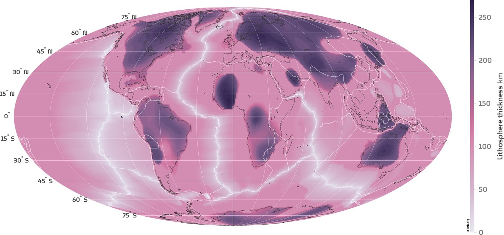

The Earth wears a rigid shell of rock, the lithosphere, broken into plates that slide over hotter, softer mantle beneath. In some places that shell is thinner than a marathon is long. In others it reaches down more than 200 km. Click anywhere on the map to see how far down it goes beneath your feet.
Dig down beneath any spot on Earth and you pass first through the crust, then into the mantle. For a while the mantle stays cold and stiff, welded to the crust above it as one rigid layer. Then, somewhere between a few tens and a few hundred kilometres down, it becomes hot enough to creep. That change marks the base of the lithosphere, the bottom of the plate you live on. Under a mid-ocean ridge it comes very close to the surface; under the old heart of a continent it can sit deeper than the distance from London to Birmingham.
This page started with a beautiful map by Fabio Crameri on s-Ink, drawn from a model by Clinton Conrad and Carolina Lithgow-Bertelloni (2006). The s-Ink download holds only images, not the numbers behind them, and I could not find an open copy of that grid. So I built my own map from two newer open models that do publish their numbers: LithoRef18 (Afonso and colleagues, 2019) and WINTERC-G (Fullea and colleagues, 2021). Where they agree, the picture is solid; where they disagree, the map lets you see it.
Colours show how far down the base of the lithosphere lies: pale for thin, deep plum for thick. By default the map shows the average of the two models. Switch to either model alone, to where they disagree, to the age of the sea floor, or to the thickness of the crust. Search a place or click anywhere for a cross-section of the ground beneath it.
Click the map or search a place.
Thickness: LithoRef18 (2 degree grid, smoothed for display) and WINTERC-G (triangular grid about 225 km apart, interpolated). Sea-floor age: Seton et al. (2020). Plate boundaries: Bird (2003). Volcanoes: Wikidata items with a Smithsonian Global Volcanism Program number. Diamond mines: Wikidata. Base map tiles © Esri.
The thickest lithosphere sits under the cratons, the oldest and most stable cores of the continents, many of them more than 2.5 billion years old. Geologists think these regions owe their survival to deep, cold, chemically depleted roots, sometimes called keels, which are buoyant enough to resist being dragged back into the mantle. In both models the cratons stand out as islands of deep plum: across 14 representative points, the median depth to the base is 178 km in LithoRef18 and 199 km in WINTERC-G, and 11 of the 14 are deeper than 150 km in both.
The exception proves the rule. The eastern North China craton is ancient at the surface but sits on lithosphere only about 66 km thick here. Geologists widely describe it as a craton that lost much of its root, probably during the last 200 million years. Its big cities, including Tianjin, are among the thinnest-floored of any city of a million people. Click a card to fly there.
Oceanic plates are made at mid-ocean ridges, where hot mantle rises, melts and freezes into new sea floor. As the new plate moves away it cools from above, and the cold, rigid layer grows downwards. Simple cooling theory says its thickness should grow with the square root of its age: four times as old, twice as thick. On sea floor younger than 2 million years LithoRef18 puts the base at a median of 42 km, rising to 118 km on sea floor older than 150 million years. Across all the ocean, its thickness tracks the square root of age with a correlation of 0.88.
WINTERC-G tells the same story more quietly, from 70 to 99 km, partly because its nodes are about 225 km apart, wider than the thin strip along a ridge. Both curves flatten for the oldest sea floor, as plate-cooling models predict. The oldest crust in the age grid, about 339 million years old, lies in the eastern Mediterranean.
Lithosphere thickness against the age of the sea floor
Median of ocean cells in each age band, with the middle half shaded. Dashed: textbook half-space cooling, 2.32 times the square root of (thermal diffusivity times age), with diffusivity 0.000001 m² per second.
Thin lithosphere and volcanoes go together. Most volcanoes grow where plates pull apart or where one dives beneath another, and in both settings the rigid lid is thin. Of the 1,828 volcanoes with a Smithsonian Global Volcanism Program number in Wikidata, 71% stand on lithosphere less than 100 km thick (averaging the two models), and only 1% on ground deeper than 200 km. Their median is 84 km, well below the continental median of 117 km.
Diamonds are the opposite. They form in the mantle at depths of roughly 150 km or more, where pressure is high enough, and survive only where a thick, cold root keeps them stable. They reach the surface in rare, fast eruptions of kimberlite. Of the 63 diamond mines in Wikidata with coordinates, 87% sit on lithosphere more than 150 km thick. Their median root, 207 km, is deeper than 92% of all continental ground. That is the pattern prospectors call Clifford's rule: look for diamonds on the old cratons.
How deep the root goes: continents, volcanoes, diamond mines
Share in each 20 km band of the average of the two models. Continents: area without oceanic crust in the age grid, so it includes continental shelves.
Wikidata coverage of mines is thin and uneven (63 sites, mostly large or famous ones), and some volcano entries are submarine. The pattern is clear, but the exact shares would shift with a fuller list.
Britain is not a craton. Its rocks were stitched together from several older fragments, stretched when the Atlantic opened and warmed by the volcanoes of the Hebrides some 60 million years ago. Its lithosphere is middling: the UK averages 115 km across the two models, 73rd thickest of the 154 countries with at least 20,000 km² of land, close to the continental median of 117 km. Thickness falls to the north and west.
Under Lancashire the base lies about 90 km down in LithoRef18 and 99 km in WINTERC-G, of which roughly 33 km is crust. The nearest ground where both models put the base below 200 km is in Sweden, about 1,480 km away: the edge of the Baltic Shield, one of Europe's ancient hearts.
Depth to the base of the lithosphere under UK towns
Each row: LithoRef18 and WINTERC-G, joined by a line. The shaded band is the middle half of the world's continental ground.
Averaged across their land, the countries on the East European craton come out thickest, led by Lithuania (248 km). The thinnest are along young rifts and plate boundaries, led by Djibouti (53 km), at the mouth of the Red Sea where Africa and Arabia are pulling apart. Click a row to see it on the map.
Area-weighted means over 0.25 degree cells inside simplified Natural Earth outlines, countries with at least 20,000 km² in the grid. WINTERC-G stops at 300 km, so the Baltic states may be thicker than shown.
Nobody can drill to the base of the lithosphere. Every map of it is a model, built from how seismic waves travel, how heat flows out of the ground, how high the land stands and how gravity varies. LithoRef18 and WINTERC-G use overlapping kinds of evidence but different methods, and they agree on the broad pattern: a correlation of 0.74 across the globe, with a median difference of 19 km. They differ by more than 50 km over 8% of the Earth's surface.
The biggest arguments are under the East European plain, where WINTERC-G reaches its 300 km ceiling, and under Tibet, where WINTERC-G finds a thick root of about 297 km and LithoRef18 only 127 km. Geologists have long debated Tibet's deep structure, so this is honest uncertainty, not an error in either map. Choose "Disagreement" above the map to see where the two part company.
The two models, cell by cell
Share of the Earth's surface in each 10 km by 10 km box. On the diagonal the models agree.
Fabio Crameri's map on s-Ink shows Conrad and Lithgow-Bertelloni's 2006 model, which set oceanic thickness from the square root of sea-floor age and continental thickness from seismic tomography, with 100 km as the boundary between the two. It is reproduced here under its CC BY-SA 4.0 licence. Its broad pattern matches the two newer models: the same cratons, the same thin ridges.

What "thickness" means. The lithosphere has no sharp floor. Rock gets steadily hotter and weaker with depth, and different methods put the boundary in different places: where temperature reaches a set value, where seismic waves slow, or where rock starts to flow. The two models here use thermal definitions. Read every number as an estimate with an uncertainty of tens of kilometres.
LithoRef18. Afonso and colleagues' global reference model (Geophysical Journal International, 2019), from the source file on the EarthByte GPlates Portal: 16,200 cells of 2 degrees. Thickness is the depth of the lithosphere's base below the surface (base minus elevation). For the map it is smoothed to 0.25 degree cells by bilinear interpolation, which cannot add detail the model does not have.
WINTERC-G. Fullea, Lebedev, Martinec and Celli's thermochemical model (Geophysical Journal International, 2021), version 5.4 on Zenodo: the depth of the thermal base of the lithosphere at 12,232 nodes about 225 km apart, from surface waves, heat flow, elevation and satellite gravity. I interpolated it to 0.25 degree cells by inverse distance from the four nearest nodes. Its values run from 45 to 300 km; 80 nodes sit at the 300 km ceiling.
Average and disagreement. The default map is the simple mean of the two. Disagreement is WINTERC-G minus LithoRef18.
Sea floor. Ages from Seton et al. (2020), 6 arc-minute grid, averaged into 0.25 degree cells. Cells without oceanic crust count as continental, which includes continental shelves and a few marginal seas. Shares of the surface are area-weighted.
Points. Volcanoes: 1,828 Wikidata items with a Smithsonian Global Volcanism Program volcano number. Diamond mines: 63 Wikidata items that are diamond mines or list diamond as their product. Cities: GeoNames places of 100,000 people or more (6,285). Craton points are approximate centres chosen from general geological maps, not boundaries.
What this is not. These are coarse global models. They cannot resolve a single valley or town, and neither is the final word. Local seismic studies may find quite different values for a given place.
LithoRef18: Afonso, J.C., Salajegheh, F., Szwillus, W., Ebbing, J. and Gaina, C. (2019) A global reference model of the lithosphere and upper mantle from joint inversion and analysis of multiple data sets. Geophysical Journal International 217(3): 1602 to 1628, https://doi.org/10.1093/gji/ggz094 . File from the EarthByte GPlates Portal (EarthByte FTP area licensed CC BY 4.0).
WINTERC-G: Fullea, J., Lebedev, S., Martinec, Z. and Celli, N.L. (2021) WINTERC-G: mapping the upper mantle thermochemical heterogeneity. Geophysical Journal International 226(1): 146 to 191. Model files: https://doi.org/10.5281/zenodo.5771863 (CC BY 4.0).
Sea-floor age: Seton, M. et al. (2020) A global dataset of present-day oceanic crustal age and seafloor spreading parameters. Geochemistry, Geophysics, Geosystems, https://doi.org/10.1029/2020GC009214 . EarthByte, CC BY 4.0.
Plate boundaries: Bird, P. (2003) An updated digital model of plate boundaries. Geochemistry, Geophysics, Geosystems 4(3): 1027, via github.com/fraxen/tectonicplates (Hugo Ahlenius, Nordpil; ODC-BY 1.0).
Original map: Fabio Crameri, s-Ink (s-ink.org/lithosphere-thickness-map), based on Conrad, C.P. and Lithgow-Bertelloni, C. (2006) Influence of continental roots and asthenosphere on plate-mantle coupling. Geophysical Research Letters 33: L05312, https://doi.org/10.1029/2005GL025621 . CC BY-SA 4.0.
Colour maps: Crameri, F. Scientific colour maps (acton, vik, batlow, lajolla), https://doi.org/10.5281/zenodo.1243862 (MIT licence).
Volcanoes and diamond mines: Wikidata (CC0). Cities: GeoNames (CC BY 4.0). Country outlines: Natural Earth (public domain). Base map, hill shading and label tiles © Esri, HERE, Garmin, USGS, NGA, Maxar, Earthstar Geographics, © OpenStreetMap contributors, and the GIS user community.